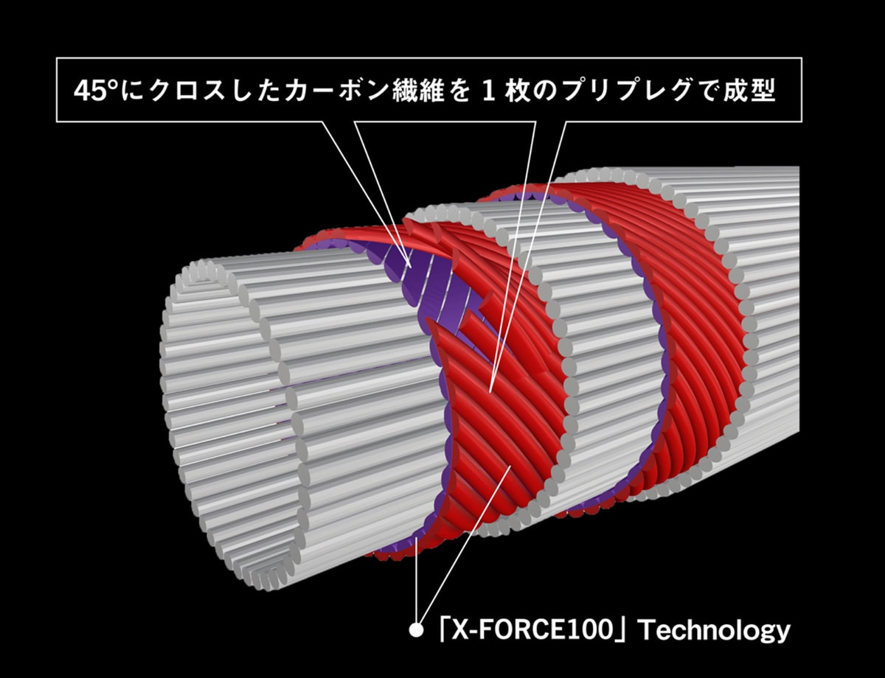
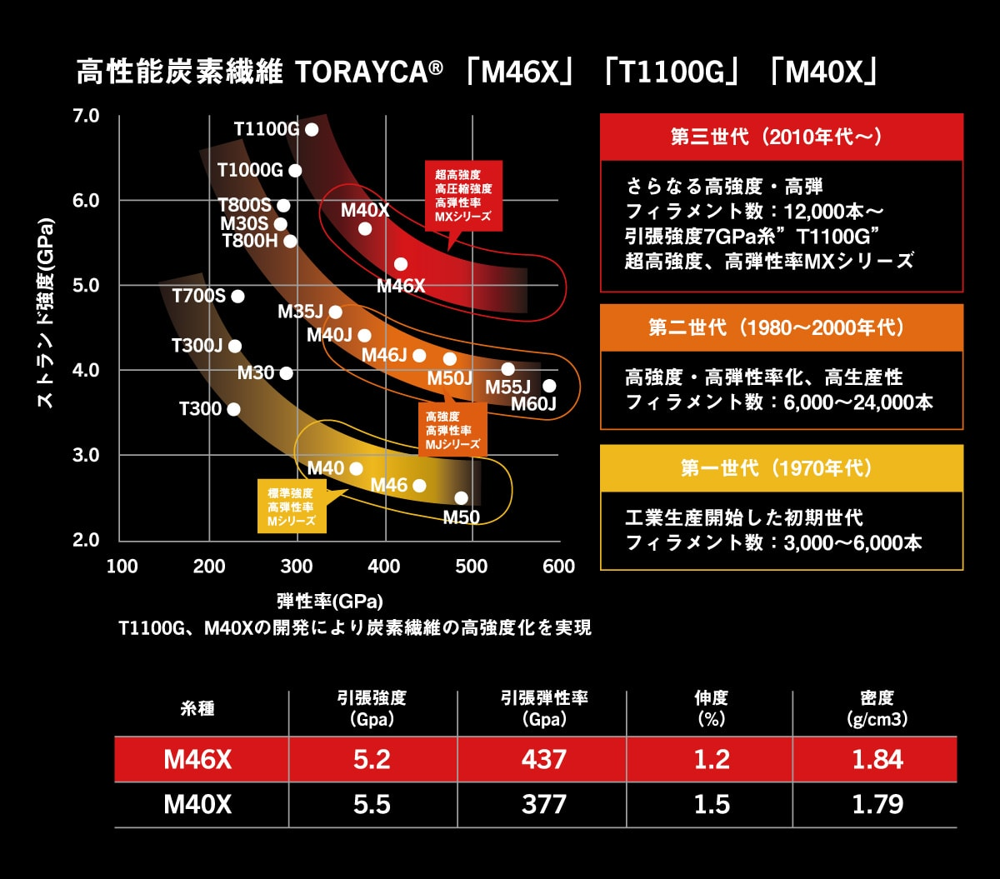

フージンZ 6th
（Foojin'Z 6th Generation）
フージンZ 6th（Foojin'Z 6th Generation）はAPIA（アピア）のシーバスロッドです。
2002年の「風神号」から続くアピアの看板シリーズの6代目で、シーバスロッドの設計上、素材とテクノロジーにおいて現時点での最高到達点を体現したフラッグシップ。TORAYCA第3世代カーボンのみで構成したブランクで、飛距離・アキュラシー・パワーを突き詰めています。

画像出典:APIA公式HP
スペック
- メーカー
- APIA（アピア）
- タイプ
- シーバスロッド（スピニング）
- モデル数
- 2ピース9モデル＋4ピース限定2モデル
- 長さ
- 7ft7in〜10ft8in
- 自重
- 117〜182g
- カーボン含有率
- 100%
- ガイド
- Fujiチタンフレーム TORZITE（トップのみSiC-S）
- 価格
- 96,800〜115,500円（税込）
▼今すぐチェック
フージンZ 6thの特徴
素材・製法・ジョイントのすべてで“現時点の最高到達点”を目指したフラッグシップ
-
TORAYCA第3世代カーボンのみで構成
5代目から搭載した高弾性「M40X」・中弾性「T1100G」に加え、弾性率46tの超高弾性「M46X」を新たに投入。第3世代カーボンだけで構成したブランクで、突出した飛距離・アキュラシー・パワーを実現している。
-
カーボン含有率100%の「X-FORCE100」
45°にクロスしたカーボン繊維を1枚のプリプレグで成型する、業界初の製法「X-FORCE100」。100%ピュアカーボンで振動伝達が向上し、ティップブレの抑制と感度アップにつながっている。
-
継ぎ目の弱点を解消する「NANO JOINT」
マルチピースロッドの弱点だったジョイント部の重量増・突っ張り・強度低下を解消するアピア独自の「NANO JOINT」をさらに進化。1ピースに近い曲がりを目指している。
フージンZ 6thの選び方
まずは「どこで・何を投げるか」でモデルを選ぶのが基本です。
港湾や小規模河川で軽めのルアー（3〜28g）を中心に使うならEVE-RUN S86ML、河川や干潟でオールラウンドに使うならFLOW HUNT S91MLやANGEL SHOOTER S96M、大河川やサーフ・磯で遠投が必要ならHIGH ROLLER S103MLやCRAZY CARRY S108MH、ランカーや大型ルアーを想定するならVANCOOR S92HやBEAST BRAWL S93MHと、ルアー重量と長さで絞り込むと選びやすくなります。
フージンZ 6thのが向いている釣り
シーバス全般、特にランカーシーバスやヒラスズキを本気で狙う釣りが最大の出番。
道具の性能に妥協したくない人、飛距離・感度・パワーのすべてを最高レベルで求める人に向いたシリーズです。
ワンポイント
6thは2025年の秋〜冬に発売されたモデルです。EVE-RUNとHIGH ROLLERには、持ち運びやすい4ピースの限定モデル（EX Ⅳ）もあります。
生産終了後5年が経過するまで、回数の制限なく免責金額で修理できる「APIAプレミアム保証」付き。保証書は大切に保管しておきましょう。
フージンZ 6thのモデル
| モデル | 長さ／自重 | ルアー重量／ライン |
|---|---|---|
| SUPER SEVEN S77MH | 7'7"／117g | 8-42g／PE#0.8-2 |
| EVE-RUN S86ML | 8'6"／129g | 3-28g／PE#0.6-1.5 |
| TIMELESS S88M | 8'8"／143g | 6-40g／PE#0.8-2 |
| FLOW HUNT S91ML | 9'1"／130g | 5-35g／PE#0.6-1.5 |
| VANCOOR S92H | 9'2"／173g | 10-63g／PE#1.2-3 |
| BEAST BRAWL S93MH | 9'3"／150g | 10-56g／PE#1-2.5 |
| ANGEL SHOOTER S96M | 9'6"／148g | 8-42g／PE#0.8-2 |
| HIGH ROLLER S103ML | 10'3"／154g | 7-42g／PE#0.8-2 |
| CRAZY CARRY S108MH | 10'8"／182g | 12-56g／PE#1-2.5 |
数値は公式サイトのスペック表（プロトタイプ時点）によるもので、発売時に変更になる場合があります。ほかに4ピースの限定モデル「EVE-RUN EX Ⅳ S86ML」「HIGH ROLLER EX Ⅳ S103ML」もラインナップされています。
テクノロジー
フージンZ 6thを支える主なテクノロジーを紹介します。

X-FORCE10045°にクロスしたカーボン繊維を1枚のプリプレグで成型する、カーボン含有率100%の製法。

TORAYCA第3世代カーボンM46X・M40X・T1100Gの第3世代カーボンだけでブランクを構成。
画像出典:APIA公式HP
フージンZ 6thとあわせてチェックしたいアイテム
-
フージンRS（全モデル紹介）
アピア
詳細はこちら＞
フージンZの「X-FORCE100」製法を受け継いだミドルクラス。全12モデルで、性能と価格のバランスを重視するならこちら。
-
 グランデージ
アピア
詳細はこちら＞
グランデージ
アピア
詳細はこちら＞
シーバス以外の釣りにも対応する汎用シリーズ。ロックショア、ライトゲーム、チヌ、ボートなど釣り別のサブシリーズから選べる。
-
 25 ベンチュラ LT4000-CXH
アピア
詳細はこちら＞
25 ベンチュラ LT4000-CXH
アピア
詳細はこちら＞
アピアのシーバス用スピニングリール。フージンZと合わせて「アピアで揃えたい」人に。